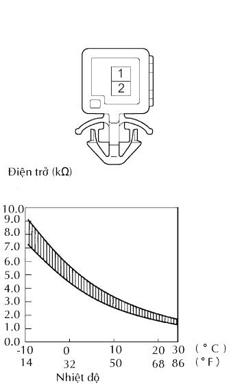

CẢM BIẾN NHIỆT ĐỘ GIÀN LẠNH > KIỂM TRA
Xem Phần Chuẩn Bị
Kích chuột vào đây
1. KIỂM TRA CẢM BIẾN NHIỆT ĐỘ GIÀN LẠNH

Đo điện trở của cảm biến.
Điện trở tiêu chuẩn:
Nối dụng cụ đo
Điều kiện
Điều kiện tiêu chuẩn
1 - 2
0°C (32°F)
4.40 đến 5.35 kΩ
1 - 2
15°C (59°F)
2.14 đến 2.58 kΩ
CHÚ Ý:
Thậm chí chỉ chạm nhẹ vào cảm biến cũng có thể làm thay đổi giá trị điện trở. Chắc chắn phải cầm vào giắc nối của cảm biến.
Sau khi đo, nhiệt độ của cảm biến phải giống với nhiệt độ bên ngoài xe.
Nếu giá trị điện trở không như tiêu chuẩn, hãy thay thế cảm biến nhiệt độ giàn lạnh.